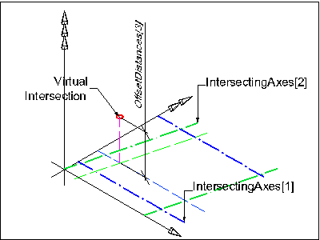

8.7.3.16 IfcVirtualGridIntersection
8.7.3.16.1 Semantic definition
IfcVirtualGridIntersection defines the derived location of the intersection between two grid axes. Offset values may be given to set an offset distance to the grid axis for the calculation of the virtual grid intersection.
The two intersecting axes (IntersectingAxes) define the intersection point, which exact location (in terms of the Cartesian point representing the intersection) has to be calculated from the geometric representation of the two participating curves.
Offset values may be given (OffsetDistances). If given, the position within the list of OffsetDistances corresponds with the position within the list of IntersectingAxes. Therefore:
- OffsetDistances[1] sets the offset to IntersectingAxes[1],
- OffsetDistances[2] sets the offset to IntersectingAxes[2], and
- OffsetDistances[3] sets the offset to the virtual intersection in direction of the orientation of the cross product of IntersectingAxes[1] and the orthogonal complement of the IntersectingAxes[1] (which is the positive or negative direction of the z axis of the design grid position).
The following figures/ explain the usage of the OffsetDistances and IntersectingAxes attributes.

Figure 8.7.3.16.A illustrates two offset distances given where the virtual intersection is defined in the xy plane of the grid axis placement.

Figure 8.7.3.16.B illustrates three offset distances given where the virtual intersection is defined by an offset (in direction of the z-axis of the design grid placement) to the virtual intersection in the xy plane of the grid axis placement.
The distance of the offset curve (OffsetDistances[n]) is measured from the basis curve. The distance may be positive, negative or zero. A positive value of distance defines an offset in the direction which is normal to the curve in the sense of an anti-clockwise rotation through 90 degrees from the tangent vector T at the given point. (This is in the direction of orthogonal complement(T).) This can be reverted by the SameSense attribute at IfcGridAxis which may switch the sense of the AxisCurve.

Figure 8.7.3.16.C illustrates an example of a negative offset where the figure shows the side of the offset.
- IntersectingAxes[1].AxisCurve is an IfcTrimmedCurve with an IfcCircle as BasisCurve and SenseAgreement = TRUE.
- IntersectingAxes[1].SameSense = TRUE.
- OffsetDistances[1] is a negative length measure
Informal Propositions
- Both, IntersectingAxes[1] and IntersectingAxes[2] shall be two IfcGridAxis defined by the same IfcGrid.
- IntersectingAxes[1] and IntersectingAxes[2] shall not be part of the same row of grid axes, i.e. both shall not be within the same set of IfcGrid.UAxes or IfcGrid.VAxes of the corresponding IfcGrid.
8.7.3.16.2 Entity inheritance
8.7.3.16.3 Attributes
| # | Attribute | Type | Description |
|---|---|---|---|
| IfcVirtualGridIntersection (2) | |||
| 1 | IntersectingAxes | LIST [2:2] OF UNIQUE IfcGridAxis |
Two grid axes which intersects at exactly one intersection (see also informal proposition at IfcGrid). If attribute OffsetDistances is omitted, the intersection defines the placement or ref direction of a grid placement directly. If OffsetDistances are given, the intersection is defined by the offset curves to the grid axes. |
| 2 | OffsetDistances | LIST [2:3] OF IfcLengthMeasure |
Offset distances to the grid axes. If given, it defines virtual offset curves to the grid axes. The intersection of the offset curves specify the virtual grid intersection. |
8.7.3.16.4 Examples

8.7.3.16.5 Formal representation
ENTITY IfcVirtualGridIntersection;
IntersectingAxes : LIST [2:2] OF UNIQUE IfcGridAxis;
OffsetDistances : LIST [2:3] OF IfcLengthMeasure;
END_ENTITY;